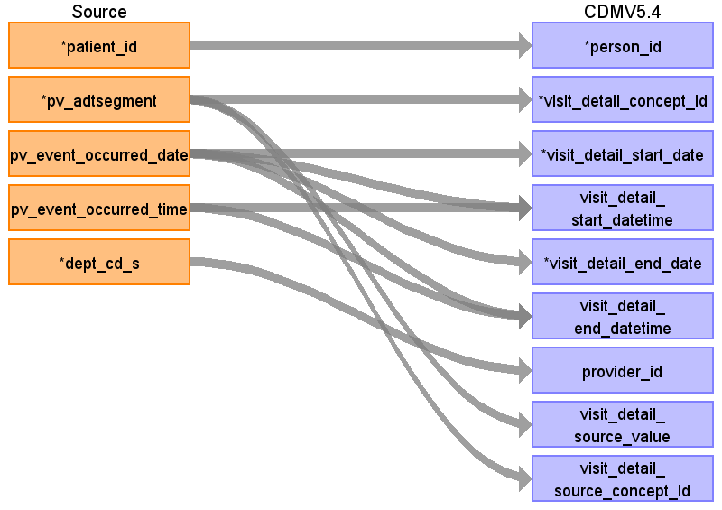

ターゲットテーブル:visit_detail
・当テーブルはPatientVisitテーブルから生成する
本項では、PatientVisitをもとに生成された、visit_detailテーブルの各項目のとの出力結果の対応を記載する。
・visit_detailには１転科転棟、および１外出外泊ごとのレコード作成する。外出泊帰院実施イベントがある場合は外出泊レコードの終了日に反映する。
・visit_detailに登録される転科転棟、および外出外泊イベントは、visit_occurrenceの入院イベントレコードと関連付ける
・provider_idには診療科コードに相当する情報を保存し、対象診療科を識別可能とする。

| Destination Field | Source field | Logic | Comment field |
|---|---|---|---|
| visit_detail_id | 一意の連番を設定する | ||
| person_id | patient_id | person.person_source_valueと結合してperson_idを取得・登録する | |
| visit_detail_concept_id | pv_adtsegment | Source_to_concept_map:
VocabID:RINCHU_VIST DomainID:Visit |
ADTセグメント識別子をもとに、以下のイベントに該当するVisitのStandard Vocabularyに変換する
外来診察の受付：ADT^A04^ADT_A01 →（visit_occurrenceに登録するため対象外） 入院実施：ADT^A01^ADT_A01 →（visit_occurrenceに登録するため対象外） 退院実施 ：ADT^A03^ADT_A03 →（visit_occurrenceに登録するため対象外） 転科・転棟実施：ADT^A02^ADT_A02 →4161975:Transfer to another hospital ward 外出泊実施：ADT^A21^ADT_A21 →8602:Temporary Lodging 外出泊帰院実施：ADT^A22^ADT_A21 →（外出泊実施のイベントレコードに集約するため対象外） |
| visit_detail_start_date | pv_event_occurred_date | TO_DATE(visit_start_date, 'YYYYMMDD') AS visit_start_date | 転科・転棟実施、外出泊実施ともにPV_EVENT_OCCURRED_DATE |
| visit_detail_start_datetime | pv_event_occurred_date pv_event_occurred_time |
CASE
WHEN visit_start_time = '999999' THEN TO_TIMESTAMP(visit_start_date || '000000','YYYYMMDDHH24MISS') ELSE TO_TIMESTAMP(visit_start_date || visit_start_time,'YYYYMMDDHH24MISS') END AS visit_start_datetime |
転科・転棟実施、外出泊実施ともにPV_EVENT_DATE+PV_EVENT_TIME |
| visit_detail_end_date | pv_event_occurred_date | CASE
WHEN visit_end_date IS NULL THEN TO_DATE('99991231', 'YYYYMMDD') ELSE TO_DATE(visit_end_date, 'YYYYMMDD') END AS visit_end_date |
ADTセグメント識別子ごとに採用する値を選択する
転科・転棟実施：ADT^A02^ADT_A02：PV_EVENT_OCCURRED_DATE 外出泊実施：ADT^A21^ADT_A21：外出泊実施日以降直近の外出泊帰院レコードのPV_EVENT_OCCURRED_DATE |
| visit_detail_end_datetime | pv_event_occurred_date pv_event_occurred_time |
CASE
WHEN visit_end_date IS NULL THEN TO_TIMESTAMP('99991231' || '000000','YYYYMMDDHH24MISS') ELSE CASE WHEN visit_end_time IS NULL THEN TO_TIMESTAMP(visit_end_date || '000000','YYYYMMDDHH24MISS') WHEN visit_end_time = '999999' THEN TO_TIMESTAMP(visit_end_date || '000000','YYYYMMDDHH24MISS') ELSE TO_TIMESTAMP(visit_end_date || visit_end_time,'YYYYMMDDHH24MISS') END END AS visit_end_datetime |
ADTセグメント識別子ごとに採用する値を選択する
転科・転棟実施：ADT^A02^ADT_A02：PV_EVENT_OCCURRED_DATE+PV_EVENT_OCCURRED_TIME 外出泊実施：ADT^A21^ADT_A21：外出泊実施日以降直近の外出泊帰院レコードのPV_EVENT_OCCURRED_DATE+PV_EVENT_OCCURRED_TIME |
| visit_detail_type_concept_id | 32817（EHR）固定とする | ||
| provider_id | dept_cd_s | 当該標準診療科コードを示すprovider_idを取得して登録する | |
| care_site_id | 当該医療機関を示すcare_site_idを固定で登録する | ||
| visit_detail_source_value | pv_adtsegment | ADTセグメント識別子をそのまま登録する |
|
| visit_detail_source_concept_id | pv_adtsegment | visit_concept_idと同じ値を登録する |
|
| admitted_from_concept_id | （設定しない） | ||
| admitted_from_source_value | （設定しない） | ||
| discharged_to_source_value | （設定しない） | ||
| discharged_to_concept_id | （設定しない） | ||
| preceding_visit_detail_id | （設定しない） | ||
| parent_visit_detail_id | （設定しない） | ||
| visit_occurrence_id | 転科転棟、外出泊イベントが発生した入院イベントレコードから生成したvisit_occurrenceのvisit_occurrence_idを取得 |